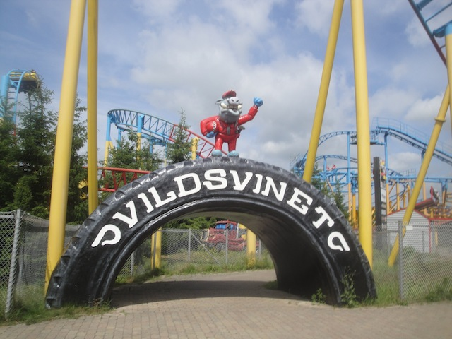

| |
Vild Svinet Review
For today's review, we are heading to Bon Bon Land to review Vild Svinet. This is the parks Euro Fighter, and it's also a historic coaster. For this isn't just a Eurofighter. It's the first Euro Fighter ever built. Yep. This is the one that started it all. You can kind of tell that with just how the layout isn't nearly as twisty as all the other ones. But it's still a really fun and enjoyable ride. So let's hop aboard and ride this thing. We get in the cars, pull down the OTSRs, and away we go. We roll around a turn and begin heading up the vertical lift. We just climb into the sky, watching as the track changes from red to blue. Ooh. Eventually, we reach the top. And of course, we slow down. Because all Eurofighters have the Goliath effect. And hey. It's not a big deal. Don't worry about it. We get yanked down the 97 degree drop, and it's a lot of fun. And hey. It provides us with a little bit of ejector air. That's always fun. And let's be real. The beyond vertical drops are always fun. I love it when these rides have them and I love that this is what launched the Eurofighters into existance. We then head into this...weird sort of turn. It's sort of a 90 degree wavy banked turn. It's hard to really describe. You just rise up into the air, are turned 90 degrees, and then turn and fall towards the ground while unbanking. It may look weird, but it's a lot of fun. We then head into a vertical loop. There's nothing really special about this vertical loop. It's just a lot of fun. Wee!!! Loop!! We then head up a curved hill and head straight into a midcourse brake run. Aww. Well hopefully the second half of the ride is fun. We then head down a curved drop and head straight into a big banked turn that just seems to be turning forever. Eventually, we begin to turn into the opposite direction. You'd expect a little bit of headbanging here. But nope. There's no headbanging on this ride. But it's also not super exciting at this point. Just sort of cruising right now. We head around the turn and into a tiny little hill. Wee. Tiny pop of airtime. And of course, that leads right into the brake run. So while Vild Svinet is fairly tame and vanilla as far as Euro Fighters go nowadays, it's still fun. It's still got a cool beyond vertical drop, a funky banked turn, a fun loop, and some random curves and fun bits like that. It's a fun ride and something definetly worth your time at Bon Bon Land.
7/10
Location: Bon Bon Land
Opened: 2003
Built by: Gerstlauer
Last Ridden: June 16, 2014
Vild Svinet Photos



Home
|